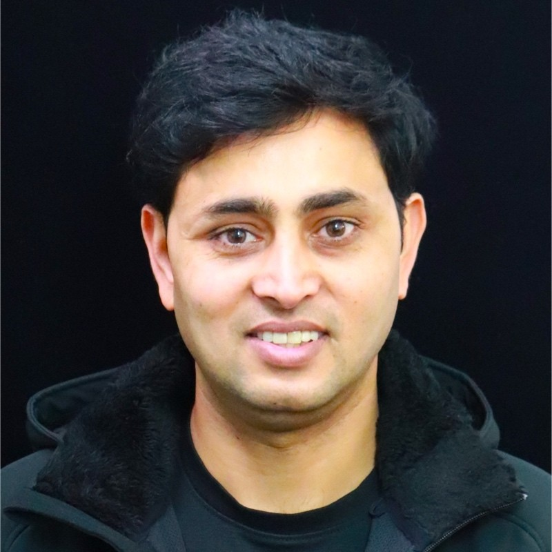

Systems thinking that survives real traffic
I teach architecture through constraints: latency, cost, blast radius, operations, data integrity, and the trade-offs that show up after launch.

He/Him • Greater Seattle • Engineering Manager at Amazon
Distributed systems expert building infrastructure for scalability, availability, and engineering excellence
I help engineers and engineering leaders think sharper, design stronger systems, and grow into high-impact roles with practical frameworks from real internet-scale work.
Tech leader • Builder • Mentor
I am Jay Tiwari, an Amazon engineering leader working across Amazon Ads, AWS S3, GenAI infrastructure, ML inference, and large-scale service platforms.
My work sits at the intersection of deep infrastructure and practical leadership: scaling Tier-1 services, launching customer-facing AWS features, building engineering teams from scratch, and turning ambiguous technical problems into mechanisms that ship.
I have led teams behind AWS S3 launches such as S3 Express One Zone, GetObjectAttributes, Additional Checksums, and read-after-write consistency. In Amazon Ads, I lead platform and infrastructure work across publisher ad serving, ML-driven pricing, GenAI operations, and services that operate under massive traffic and reliability expectations.
Tier-1 AWS S3 metadata service scale owned across reliability, latency, and customer trust.
Ad-serving API scale across OpenRTB and AdCOM compliant infrastructure.
Revenue impact from idea to strategy to execution.
Technical interviews informing direct, practical coaching for engineers and managers.
What I want to be known for
I teach architecture through constraints: latency, cost, blast radius, operations, data integrity, and the trade-offs that show up after launch.
I care about hiring, coaching, promotion readiness, writing clear business reviews, and creating team rituals that turn execution into repeatable operating strength.
My mentorship is direct, specific, and grounded in what strong interview loops, senior-level system design, and leadership evaluations actually test.
Topics I write, mentor, and speak about
I share practical frameworks for engineers, engineering managers, and technical program managers who want to design better systems, lead with more clarity, and grow into stronger opportunities.
Notes and articles on system design, engineering leadership, and interview preparation.
A placeholder for an upcoming post on handling sudden traffic bursts, protecting downstream dependencies, and scaling a service without overbuilding too early.
A step-by-step way to approach any system design problem, from clarifying requirements to trade‑offs.
The patterns I see repeatedly in mock interviews and how to avoid them in your own prep.
Walking through a real-world style system design question, including trade‑offs and back‑of‑the‑envelope math.
How to present your experience so hiring managers immediately understand your impact.
1:1 sessions inspired by what works best for candidates I’ve mentored so far.
We pick a real FAANG‑style system design question, go through it end‑to‑end, and then spend time on targeted feedback: structure, depth, trade‑offs, and communication.
We go through your resume line by line to highlight impact, reduce fluff, and align it with the roles and companies you’re targeting.
We map your current level, upcoming timelines, and weak areas, then create a focused plan across DSA, system design, and behavioral interviews.
Use this for quick decisions: offer choices, career moves, switching stacks, or how to approach a specific interview or opportunity.
To book a session, drop me a note at your.email@example.com with a short summary of your background and what you want to focus on.
Books, tools, and resources I often recommend to candidates and mentees.
Classic system design books, curated articles, and question banks that help you build strong intuition, not just memorise templates.
A short list of platforms and problem sets I recommend for targeted practice rather than endless grinding.
Resources that improve how you communicate your work, negotiate offers, and make better long‑term career decisions.
A small collection of tools for notes, diagrams, and tracking interview prep that keeps things simple and effective.
I’ll keep this section updated as I discover new resources that are genuinely helpful, not just popular.